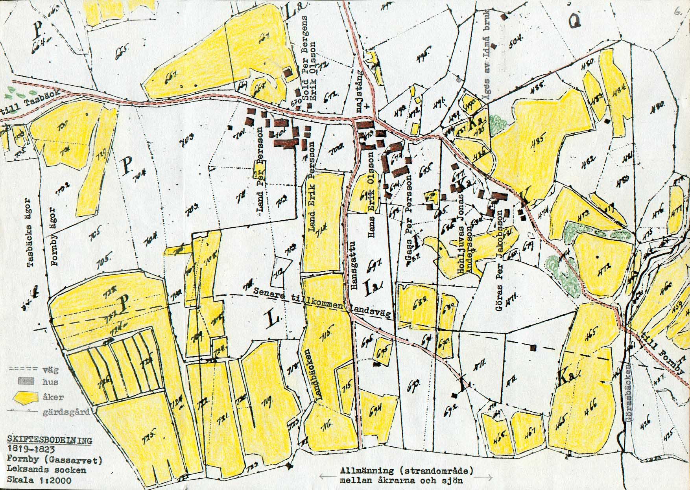
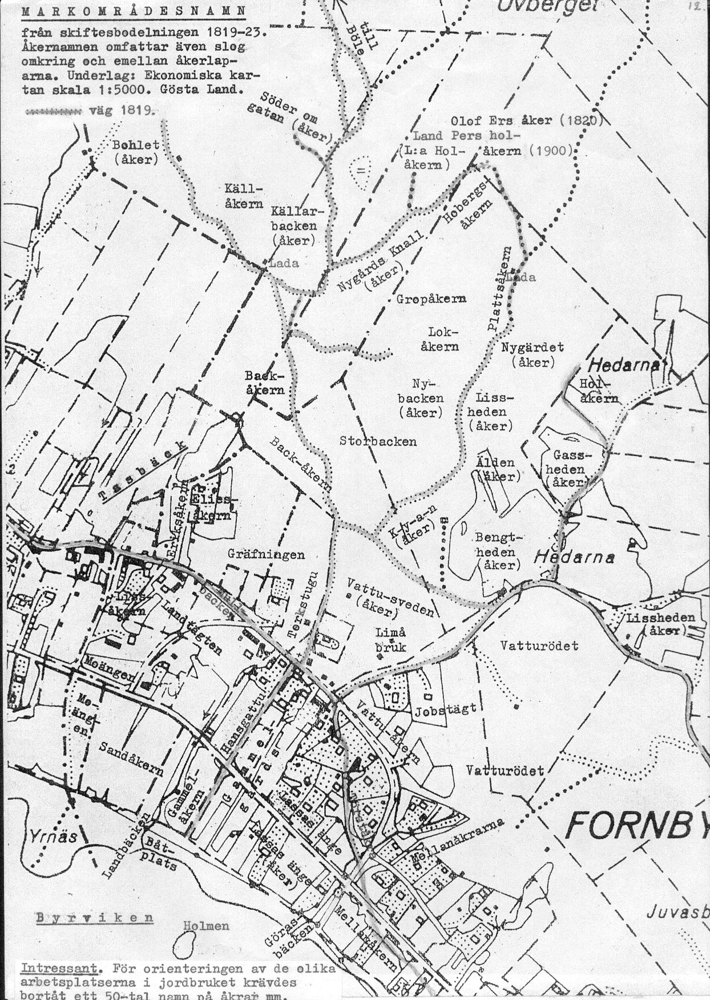

Gassarvet: En gammal Siljansnäsby
.jpg)
Byn Gassarvet torde ha uppstått under 1600-talet genom utflyttning från Fornby. I Leksands näst första husförhörslängd för Fornby 1672-1689 finns Gassarfwet antecknat. Det är den tidigaste noteringen där Gassarvet nämns.
Man tror att Gass är genitivformen av ett mansnamn som senare blivit gårdsnamn (Gassgården). Ändelsen -arv i Gassarvet kan tyda på att Gass överlåtit gården i arv och att den här delen av Fornby sedan blev kallad Gassarvet. På slutet av 1600-talet tycks byn ha bestått av Gassgården, Landgården och Hansgården.
I början av 1900-talet fanns sju gårdar med jordbruk, varav det i slutet av 40-talet var fyra verksamma kvar. Sista gården slutade med jordbruket i slutet av 60-talet.
Idag består byn av drygt 45 fastigheter, varav knappt hälften är fritidsboende. På senare år har ett antal ”återvändare” och ”nya bybor” slagit ned sina fasta bopålar i byn, ett bevis på en levande by.
Laga skiftet
Gassarvet har sitt ursprung gemensamt med Fornby bykärna. Samfälligheter ägs gemensamt med olika andelstal för respektive jordbruksfastighet i Gassarvet respektive Fornby. Dagens samfälligheter ombildades i samband med senaste laga skiftet. Skiftet startade 1947 och var klart i slutet av 60-talet. Formalia med kartor början på 70-talet och är klart 1974.

Före senaste laga skiftet var ägorna väldigt splittrade. Till exempel så var åkern ovan Mullbacken mot skogen delad på tre gårdar: Lisbetes, där husen i Krötja står, Lassas och Landjerkers.
På skifteskartorna kan man se resterna av skogsåkrar som var kvar, många med lador. Laga skiftet ägde rum vid tiden då ”bonderiet” började läggas ner i byn, vilket innebar att skogsåkrarna lämnades för träda vid den tiden. På kartan syns rester som var kvar. På kartan syns storleksordningen 25 lador som nu är borta. Utrymmet på gården räckte inte till att förvara vinterfodret utan man hade lador vid åkrar och körde hem hö efterhand. På skogsåkrarna körde man in höet i ladan med hösläde.
På skifteskartorna kan man se resterna av skogsåkrar som var kvar, många med lador. Laga skiftet ägde rum vid tiden då ”bonderiet” började läggas ner i byn, vilket innebar att skogsåkrarna lämnades för träda vid den tiden. På kartan syns rester som var kvar. På kartan syns storleksordningen 25 lador som nu är borta. Utrymmet på gården räckte inte till att förvara vinterfodret utan man hade lador vid åkrar och körde hem hö efterhand. På skogsåkrarna körde man in höet i ladan med hösläde.

Limå bruk hade fyra kolargårdar i Fornby. Än i dag har Stora största andelstalet. Gammal karta visar bland annat att marken, som senare tillskiftades Plars vid laga skiftet, längs vägen upp mot Hedarna, tillhörde Limå Bruk. Sannolikt härrör den gamla grunden från en kolargård. På kartor syns körvägarna till skogsåkrarna samt även byvägens gamla sträckning.
Det har berättats att det långt tillbaka gick en körväg nedanför nuvarande landsvägen. Sannolikt den sträckningen som fortsätter i Tasbäck mot Näsbyggebyn vid Gamlens.
Livet i byn
Här i byn fanns från början sju gårdar med jordbruk och vid slutet av 40-talet var det fyra som bedrev jordbruk. Det var LandAnnas, LandPers, Lassas och Lisbets.
Ägodelningarna var, som anges ovan, annorlunda före laga skiftet. Det var små arealer och man hjälptes åt på många sätt. Till exempel vid tröskning. Tröskverket ägdes gemensamt även med gårdar i andra byar. När det var tröskdags så hade man trösklag. Gården där det tröskades svarade för maten och vad jag minns så var det väl också lite tävling bland kvinnorna att bjuda på ”bästa” maten.
.jpg)
Man gjorde dagsverken hos varandra när en gård behövde hjälp. När en väg eller annat gemensamt skulle repareras gjorde man dagsverken. Var det någon som inte kunde eller behövdes den eller de dagarna, så ställde denne upp en annan gång eller kompenserade så det blev rättvist. Livet byggde på att man hjälptes åt.
Den sista som bedrev jordbruk var Lisbetes. Vid 75 års ålder körde Lisbetes Erik vintern 1964-1965 timmer från Börtja i Hjulbäck ut på Siljan. Något år därefter gick han med sin arbetskamrat Putte till slakt. Man slutade med flottningen 1970.
.jpg)
Byarna hade fäbodställen med gemensam mark, men fäbodbruket hade upphört långt före laga skiftet blev klart. I Siljansnäs fanns det storleksordningen 25-30 fäbodställen (hemfäbodar och långfäbodar). I några fäbodställen hade också Leksandsbyarna Tibble (Klockarberg) samt Noret (Klockarberg och Olsnäs) fäbodrätt. Fornby-Gassarvet hade sina fäbodar huvudsakligen i Forsen, samt Klockarberg (Fart), där Ingas son tagit över gården. Även någon i Fårberg har anknytning. ”Förrbargsladu” som står ovan vägen vid Lisbetes hämtades från Fårberg när fäbodbruket avslutats. Sedan var det säkert någon som genom giftermål hade tillgång till fäbodmark i andra fäbodar, men jag känner inte till någon sådan i Gassarvet. Gassarvet-Fornby hade också långfäbodar i Fjällberg.
Då jordbruket inte gav någon kontantinkomst mer än lite mjölklikvid utöver bytesvaror som smör, ost och hårt bröd med mera, var det tvunget med annan försörjning. Man tog åt sig skogshuggning och timmerkörning med häst. Några tog kolningsuppdrag. Det var ofta långväga, ibland ovanför Älvdalen.

Det var betalning efter prestation och ofta kunde arbetslaget huggare/körare få ett pris för vinteruppdraget. Man kan säga att de var entreprenörer. De for iväg i oktober och kom hem några dagar till jul/nyår och sen iväg igen. Det kunde ta dygn innan man var framme vid en kall koja och stall mitt i natten. Ibland var man tvungen att övernatta på någon gård.

Det var kolvedshuggning och kolmilor för att försörja bruken och efter hand, när sågverken kom igång blev det timmerkörning.
.jpg)